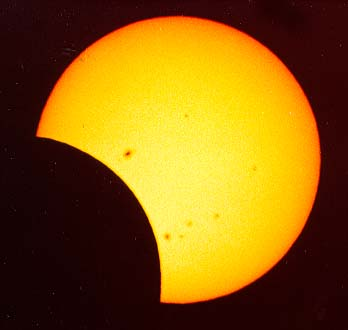
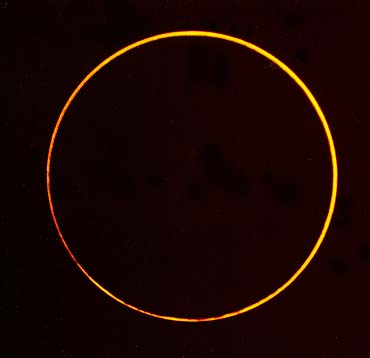
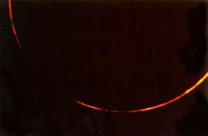

SJAA
Ephemeris
|
SJAA Ephemeris |
Ring-of-Fire Over The OutbackErnie Piini |
Of the three types of solar eclipses that occur - partial, annular and total, I consider a total the best. So why travel 12,000 miles to see a second-rate annular (Ring type) eclipse? I did, because on three previous tries my views were partially or totally obscured by clouds. In 1994 in Southern California, for instance, a marine layer of clouds marred that annular eclipse at sunset. However, if I were to cut and paste strips from my photographs of that event I would end up with a perfect ring. The chance of seeing a perfectly clear annular in Australia was enticing.
|  |
I flew the usual grueling 13 plus hour flight to Sydney and then on to Perth where I teamed up with Joe Cali, who lives in Canberra and whom I met at the 1995 total eclipse in Bolivia.
We spent Saturday morning Feb. 13 looking for another hotel room because we lost our first room due to Valentines Day. This day is very popular in Australia and rooms become a premium. Later, we got to see a little of Perth, a beautiful city with an interesting skyline and the colorful and nearby Swan River meandering through.
We took a 30-minute boat ride over to Rottnest Island, discovered by the Dutch in 1696. They found an abundance of what they thought were rats and named the Island Ratnest. But when they realized the mammals, now called Quokkas, were actually four times larger than rats, the Island was renamed Rottnest. This historic island, attached to the mainland eons ago, is a photographer's paradise and a haven for cyclists with its rugged terrain and deep blue coastal waters of the Indian Ocean. It is a must visit when in Perth. Adjoining Perth is Fremantle, the site of the America's Cup yacht race several years ago.
On Sunday, Valentines Day, we rented a car and drove north 425km (255 miles) to Geraldton, a city on the coast. We arrived early in the afternoon and took time to investigate possible eclipse sites. Joe Cali had an excellent map of that area complete with fences and RR tracks noted. We checked out three locations and with the aid of my Global Positioning System (GPS) decided on a centerline position about 60 km (36 miles) east of Geraldton in the Australian outback-complete with plenty of sweat-seeking flies, red and black ants, and some wind. The ants come out of their holes in the late afternoon and early morning.
Tuesday, we packed a lunch, cold drinks, and our equipment and headed for our site around 11 a.m. Peter and Evon Anderson from Brisbane soon joined us. The four of us had the entire site to ourselves except for a billion flies. The temperature was 105 °F when I set up my equipment under the shade of a tree. I was still calibrating my clocks and telescope when Peter announced first contact. It was sooner than the 2:30 p.m. prediction I had jotted down earlier. Despite fighting the flies and acclimating to the heat, we finally had everything under control. There was just a slight, pleasing and welcome breeze.
|  |
For this eclipse I mounted a Celestron C-90 telescope and my Canon AE-2000 camcorder side by side on a Takahashi Sky-Patrol equatorial mount. I used a Pentax ZX-5 camera body with a remote controlled cable coupled to the C-90 telescope. I used Fuji Sensia-100 transparency film for exposures of 1/2000th second.
It is a great feeling to have nothing but clear blue skies on eclipse day. As the partial eclipse progressed towards annularity, the surrounding sky became a deep blue with the planets Venus and Jupiter sparkling to the East. At last, the first of my four annulars to be perfectly clear! Second Contact, when the ring of the annular is complete, occurred at 3:28:41 p.m. according to the time recorded on my video. At mid-annularity the perfect ring (indicating we were right on the center line) occurred as predicted at 3:28:55 p.m. Third Contact, when the ring begins to break up, was recorded at 3:29:09 p.m. According to my video record, annularity lasted for 28 seconds.
As for animal behavior, the big thing I noticed were the appearance of ants all over the ground as the eclipse progressed. Few were around before this event.
The temperature decreased from 105 °F to 88 °F just after third contact for a total drop of 17 °F. No humidity recordings were attempted.
|  |
The winds were a mild 5-10 mph throughout the period up through annularity, but increased to about 50 mph about 4 minutes later. Thank God they did not appear earlier as they would have seriously hampered my results.
That evening NASA's Fred Espenak hosted a post eclipse dinner at the Skeeta's Garden Restaurant in Geraldton. Present were about 100 eclipse chasers from various parts of the world. Of great interest, besides the delicious dinner, was the attention Fred received. He was the celebrity and many people jockeyed for a chance to shake his hand and have their photos taken with him. I've known Fred for over 25 years and have been to several eclipses with him during our early involvement with eclipse chasing. He has generously provided me with valuable information about future eclipses to include in my books and anything else I asked for. He is a close personal friend and I'm happy to see him become the respected astronomy legend he has.
Wednesday, February 17, we headed north to an area called Sharks Bay World Heritage about 400 km (240 miles) north of Geraldton. Our first stop was Hamlin Pool where beds of Stromatolites lie on the beach. These are some of the oldest living organisms in our world and began their reef like buildup a billion years ago. Close by are beaches filled with small shells which have coalesced into solid, rock-like formations and are now being sawed into blocks and used for building.
Further north at Monkey Mia, wild dolphins interact with people for food. Visitors line the beach from 9 to 11 a.m. and again at 1 p.m. to see about a half-dozen selected people walk out a few feet into the sea to hand-feed a dolphin a fish. I spotted about eight bottle nose dolphins in this group. Thursday we began our return journey. We stopped overnight at the Kalbarri National Park to study ancient red rock formations along canyons and sea cliffs. Interesting color changes on the scenery occur at sunrise and sunset and are a delight to watch.
On Friday afternoon we were treated to an interesting sight of upright stone formations known as "Pinnacles of the Desert" near the town of Cervantes. Here a forest of trees washed away leaving only the roots which petrified in an upright position. As eons passed, limestone formed around the roots and became groves of standing stones. I felt like I was in nature's stonehenge. Each stone was of different shape and size ranging from a one foot to eight feet tall. Long shadows cast by the setting sun made the scene even more dramatic.
The biggest treat other than seeing the dramatic "Ring-of-Fire" on Tuesday was another view of the Southern Skies. It is so dark in the outback of Western Australia that the view of the night sky is unbelievable. The Southern Milky Way with the Southern Cross, Eta Carina, Alpha and Beta Centaurus, embedded in it (to name a few) is like seeing heaven. The Magellanic Clouds, large and small, do look like clouds. Our Northern constellations Orion and Leo appear high in the sky, upside down. I love those skies down under.
The roads we traveled were mostly two-lane. In the oncoming lane, three-trailer "truck trains" pass by with a gush of wind nearly pushing you off the road. It's scary. And you hope that a kangaroo does not leap out in front of you as you drive these lonely stretches. We saw dead "roos" lying in the middle of the road and wondered how the cars involved made out. I did some driving on the "wrong side of the road" but mostly in the outback. I remembered my previous trip to Australia for the 1993 Transit of Mercury with friend Joe Shrock. Dead tired after a 13-hour flight to Sydney, we rented a car for our trip to Canberra. I lost the coin flip and got to learn how to drive "on the wrong side." Within 20 minutes I had an accident in Sydney. I was trying to make a left turn from the inside lane. The young lady I hit was very nice to us. She helped us get to the police station for our report and later to the airport to pick up another car. She even sent us a Christmas card that year.
Saturday Morning, February 20 began at 4 a.m. as Joe Cali and I both had early flights out of Perth. We bade farewell and headed home on our separate paths. I once again "Waltzed my Matilda (telescope)" and new found memories back to California.
[Editor's Note: Join Ernie at the General Meeting of the SJAA on July 24 for slides and more from his trip.]
| Ernie Piini; last updated: February 05, 2002 | Prev Next |